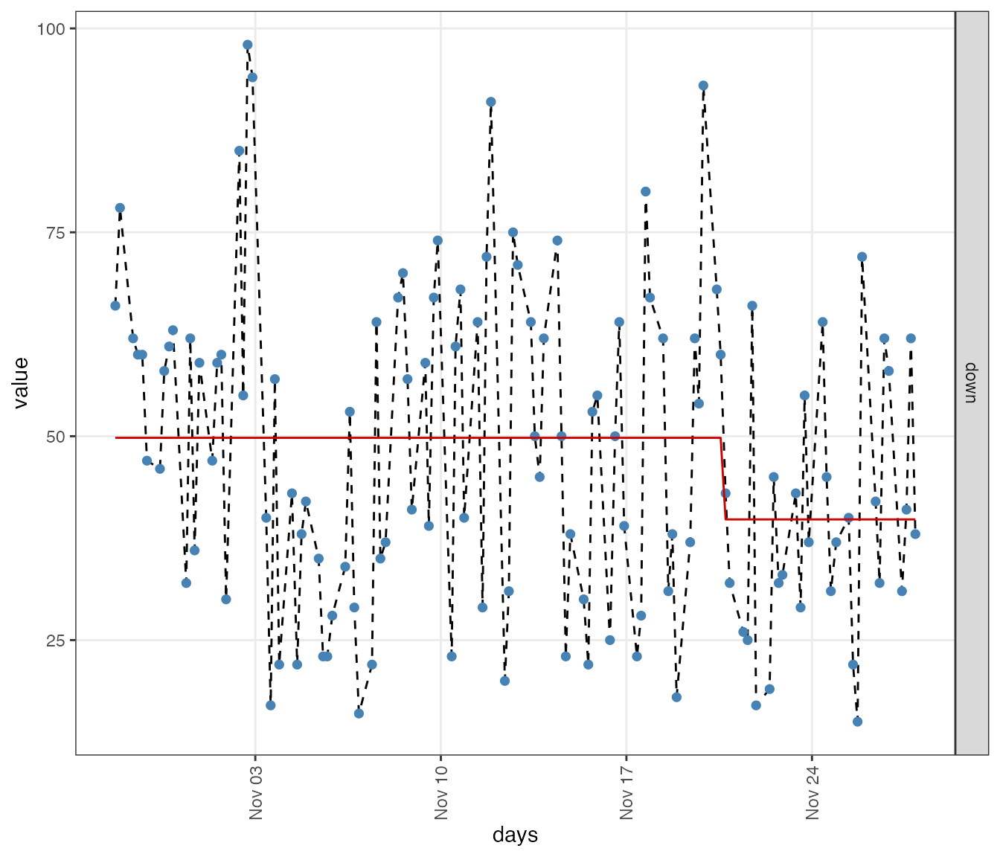
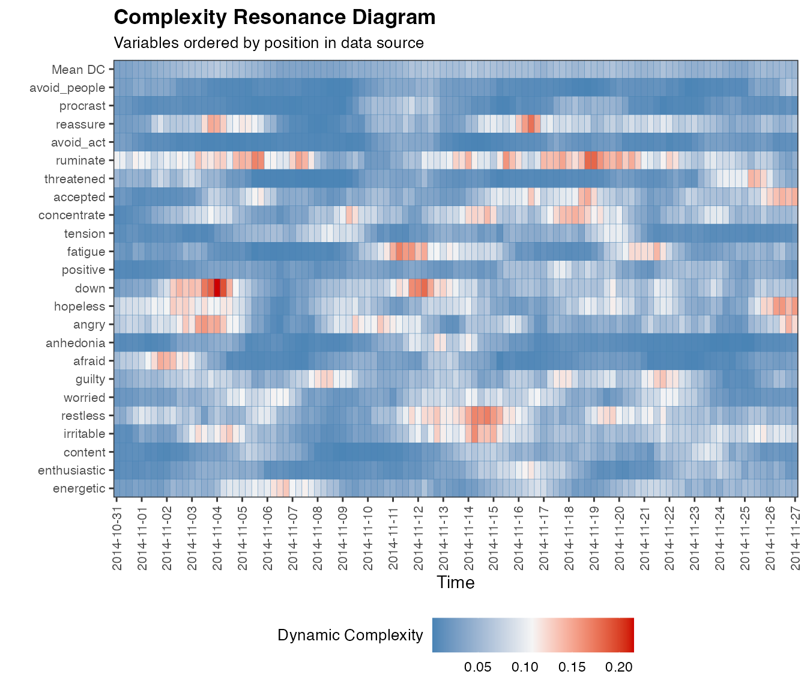
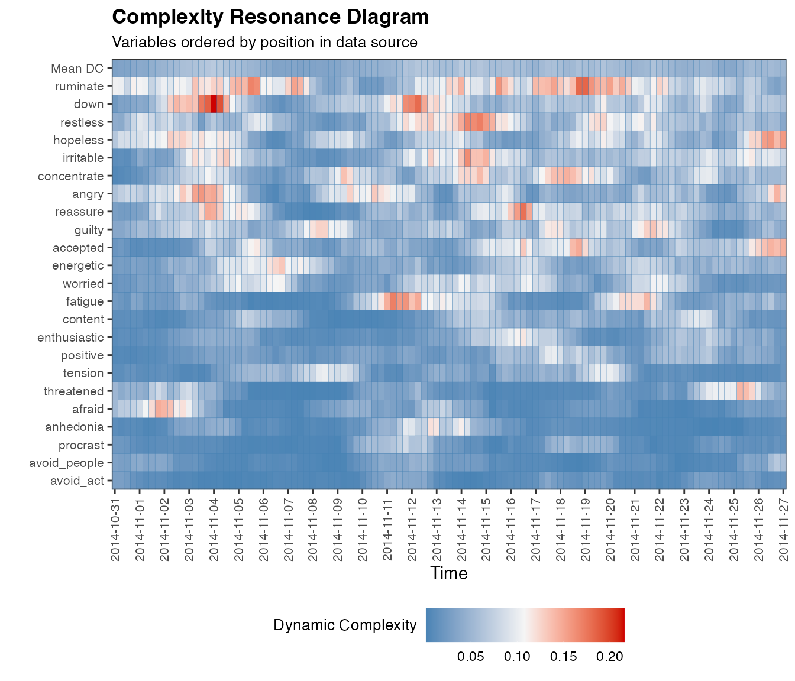
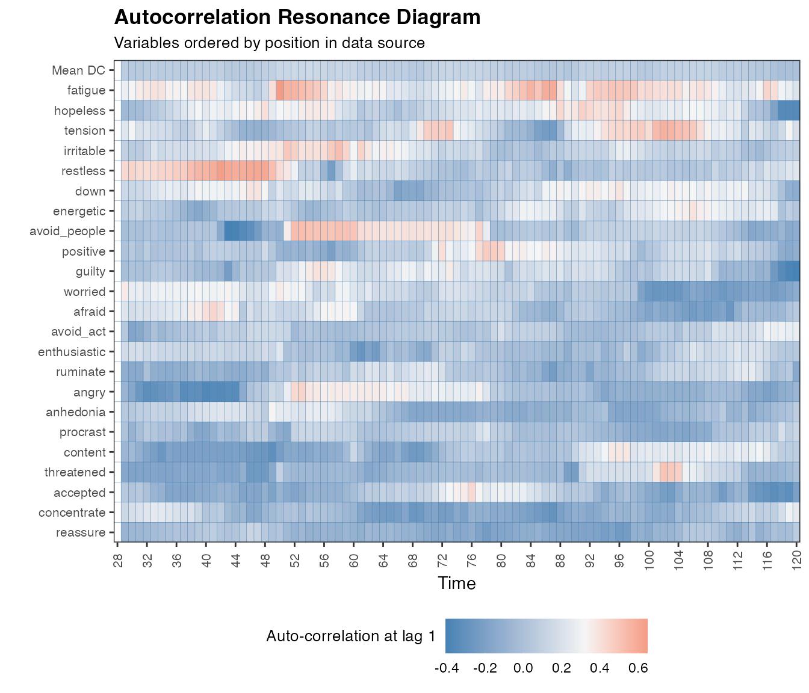

Dynamic Complexity as an Early-Warning Indicator for Clinical Change
Merlijn Olthof & Fred Hasselman
2023-02-13
Source:vignettes/dynamiccomplexity.Rmd
dynamiccomplexity.RmdEarly-warning signals for clinical change
Critical transitions between stable states in a complex system are preceded by critical fluctuations that can be identified as increased variability and complexity in the system’s behaviour over time (Haken, 1983). Critical fluctuations thus serve as an early-warning signal (Scheffer et al., 2009) for such transitions (Olthof et al., 2020a). Although often used, variance is a sub-optimal measure for critical fluctuations as it is highly sensitive to non-stationarity and noise. Therefore, the measure dynamic complexity has been proposed as a potentially more suitable indicator of critical fluctuations in short and coarse-grained time series (Schiepek & Strunk, 2010; Schiepek, 2003).
The main purpose of the vignette is to showcase the Dynamic
Complexity functions family in casnet. For comparison,
we also introduce similar functions based on variance and
autocorrelation which have been both proposed as indicators of
early-warning signals. In addition, we introduce the function
ts_levels() as a method to identify possible transitions.
We analyze publicly available ecological momentary assesment (EMA) data from 1 patient that was drawn from a personalized psychotherapy study (Fisher & Boswell, 2016) and was analysed by several different teams in a ‘Many Analysists’ study: Time to get personal? The impact of researchers’ choices on the selection of treatment targets using the experience sampling methodology by Bastiaansen et al. (2020). In this vignette, we focus on EMA data but note that dynamic complexity may also be used for different data sources (e.g. see Wiltshire et al., 2020).
Load and prepare data
We select the self-ratings that were collected four times per day and impute missing values using the mice function. The choice for the imputation method is explained in the vignette Dealing with missing values in time series (ADD LINK?).
require(mice)
data(manyAnalystsESM)
# Note: the infix function '%ci%' is from package 'invctr'
vars <- c(seq("energetic"%ci%manyAnalystsESM,"procrast"%ci%manyAnalystsESM),"avoid_people"%ci%manyAnalystsESM)
df_vars <- manyAnalystsESM[,vars]
#Imputation using the package 'mice'
set.seed(4242)
imp.cart <- mice::mice(df_vars, method = 'cart', printFlag = FALSE)
df <- mice::complete(imp.cart)State variable
Critical transitions can be detected as regime shifts in the state variable of a system in a given context. For example, the onset of an epileptic seizure involves a regime shift in the EEG signal, which serves as state variable for this particular transition. The identification of state variables for clinical change is not straightforward and an important avenue for future research. Here, we simply use the item ‘Felt down or depressed’ as state variable as it seems an important variable for patients with depression. Also, ‘feeling down’ has been used as a state variable in previous research (Wichers, Smit & Snippe, 2020)
Detecting transitions with ts_levels()
We can use the function ts_levels() to evaluate whether
there are regime shifts in the data. The method uses function
rpart::rpart() and has several arguments that control when
a level should be considered, that is, how many datapoints should a
level last minimally; how much must the signal change before a new level
is considered, etc. Check the manual pages for more details. `
The value of minDataSplit tells the algorithm how many
data points need to be in a segment before a change of level is
considered. Here we choose minDataSplit = 12, which is 3
days. The value of minLevelDuration tells the algorithm how
long a segment should be at least. We choose 28 time points, which
corresponds to 1 week.
One can see that there appears to be a transitions in feeling down around 3/4 of the measurement period.
dates <- manyAnalystsESM$start
dateTimesS <- as.POSIXct(strptime(dates, "%m/%d/%Y %H:%M"))
idNA <- complete.cases(df_vars)
dateTimess.NA <- dateTimesS[idNA]
lvl <- ts_levels(df$down, minDataSplit = 12, minLevelDuration = 28, changeSensitivity = 0.05)
# ggplot likes the long data format
df_state <- data.frame(days = dateTimesS,
down = df$down) %>%
tidyr::gather(key = variable, value = value, -days, factor_key = TRUE)
df_state$level <-
data.frame(days=dateTimesS,
positive_lvl = lvl$pred$p) %>%
tidyr::gather(key = variable_lvl, value = level, -days, factor_key = TRUE) %>%
dplyr::select("level") %>%
unlist(.)
ggplot(df_state, aes(x = days)) +
geom_line(aes(y = value), linetype = 2) +
geom_point(aes(y = value), pch=16, size=2, colour = "steelblue") +
geom_line(aes(y = level), colour = "red3") +
facet_grid(variable~., scales = "free_y") +
theme_bw() + theme(panel.grid.minor = element_blank(),
axis.text.x = element_text(angle = 90, vjust =0.5))
The shift in ‘feeling down’ is identified in measurement 93.
lvl$tree$splits> count ncat improve index adj
> x 122 1 0.05031075 92.5 0Detecting Early Warning Signals using Dynamic Complexity
Using dc_win()
dc_win() is used to calculate Dynamic Complexity. The
function can also call plotDC_res() to produce a
Complexity Resonance Diagram by setting
doPlot = TRUE. The input for the function is a dataframe
consisting of time series, the output is a list, featuring a new
dataframe consisting of a ‘dynamic complexity time series’ for each
original time series.
Dynamic complexity is calculated as a product of fluctuation
intensity, given by function dc_f() and
distribution uniformity, given by function dc_d().
These functions can be called separately, or, you can set the argument
returnFandD = TRUE in function dc_win(). Also,
the resonance diagrams for only measure D or F can simply be obtained by
adding doPlotF = TRUE and doPlotD = TRUE.
All variables should be on the same scale for the function to work
properly. The arguments scale_min and
scale_max have to be given manually as they refer to the
theoretical limits of the scale. If the data contain a mix of known
scale ranges, transformation should be done manually.
The analysis uses a backwards overlapping moving window of size N.
Here, we set win = 12, corresponding to 12 measurement
points and thus 3 days. The first dynamic complexity value in the output
is placed at the time point that corresponds to the window length. The
output time series thus start with a serie of NA values,
whose length is equal to the window size -1.
Note that while dc_win() is optimized for multivariate
computation and visualization, the analysis itself is univariate. We can
use the function thus for one variable. Here, we calculate dynamic
complexity values for the item ‘rumination’ and then create a simple
plot. The vertical line indicates the moment of the transition in ‘down’
as identified above. It appears that this transition is preceded by
increased dynamic complexity in ‘rumination’: an early-warning
signal.
dc.ruminate <- dc_win(df$ruminate, win=12, scale_min=0, scale_max=100, doPlot = FALSE)
plot(dc.ruminate$df, type='l')
abline(v=93) 
And for multiple variables, in which case we can produce a nice looking complexity resonance diagram:
dc.case <- dc_win(df, win=12, scale_min=0, scale_max=100, useTimeVector = as.Date(dateTimesS), timeStamp = "1999-01-31", doPlot = TRUE)
If you do not have any date/time information, the x-axis will display
integers. By setting colOrder = NA, we can order the output
columns based on mean dynamic complexity, resulting in a more
comprehensive diagram:
dc.case <- dc_win(df, win=12, scale_min=0, scale_max=100, useTimeVector = as.Date(dateTimesS), timeStamp = "1999-01-31", doPlot = TRUE, colOrder = NA)
One may aggregate the dynamic complexity values of multiple items, for example by averaging (other options would be clustering, either data-driven or theory-driven).

Check the help pages for many more options for plotting, for example,
marking specific time points with argument markID, setting
certain time periods to NA with NAdates or
displaying the first window on the x-axis by setting
trimFirstWin = FALSE.
Using dc_ccp()
One approach to identify critical fluctuations is to identify peaks
in dynamic complexity using a statistical test, decision rule or control
chart. The function dc_ccp() identifies ‘cumulative
complexity peaks’, i.e. timepoints where a significant number of items
showed significant peaks in dynamic complexity. Significance is here
determined using one-tailed Z-tests. First, a Z-test is used to identify
peaks in each time series, which are visualized as grey squares in the
diagram below. Then, another Z-test is used to identify a significant
number of peaks on a particular day, which is visualized as black
squares in the upper row of the diagram. The method is introduced in
Schiepek (2003). It should be noted that this is just one approach to
peak detection and other techniques should be considered as well when
using this in research or practice. An important limitation for
interpretation of cumulative complexity peaks is that peaks are
identified based on all observations that are used as an input. Results
can thus differ when more or less observations are used as input.
ccp.case <- dc_ccp(df_win = dc.case)
plotDC_ccp(df_ccp = ccp.case, win = 12, useTimeVector = as.Date(dateTimesS), timeStamp = "1999-01-31", colOrder = NA, title = "Cumulative Complexity Peak Plot")
Comparison with variance and autocorrelation
Variance and autocorrelation are the most well-known indicators for
early-warning signals, as introduced by Scheffer et al., (2009). Here we
provide the functions var_win() and ac_win()
to calculate them in a similar functionality as dc_win()
and we visualize the results in resonance diagrams.
The results for variance are somewhat similar to those of dynamic complexity, as could be expected since both are sensitive to critical fluctuations (for a comparison of both measures see Schiepek & Strunk, 2010; Olthof et al., 2020b).
Autocorrelation is believed to tap into the early-warning signal of critical slowing down, instead of critical fluctuations and gives a rather different resonance diagram. For a paper illustrating the difference between critical slowing down and critical fluctuations, we recommend Kelso et al., (1987).
Using var_win()
We use the function for the item ‘ruminate’…
var.ruminate <- var_win(df$ruminate, win=12)
plot(na.exclude(var.ruminate$df), type='l')
abline(v=93)
…and for the full dataset:
var.case <- var_win(df, win=12, useTimeVector = as.Date(dateTimesS), timeStamp = "1999-01-31", doPlot = TRUE, colOrder = NA)
One may aggregate the variance time series:
Using ac_win()
Autocorrelation is calculated with win=28, corresponding to 7 days, as 12 data points is very little for autocorrelation.
We use the function for the item ‘ruminate’…
ac.ruminate <- ac_win(df$ruminate, win=12)
plot(na.exclude(ac.ruminate$df), type='l')
abline(v=93)…and for the full dataset:
ac.case <- ac_win(df, win=28, useTimeVector = as.Date(dateTimesS), timeStamp = "1999-01-31", doPlot = TRUE, colOrder = NA)
One may aggregate the autocorrelation time series:
References
Bastiaansen, J. A., Kunkels, Y. K., Blaauw, F., Boker, S. M., Ceulemans, E., Chen, M., … Bringmann, L. F. (2020). Time to get personal? The impact of researchers’ choices on the selection of treatment targets using the experience sampling methodology. Journal of Psychosomatic Research, 137, 110211. https://doi.org/10.1016/j.jpsychores.2020.110211
Fisher, A. J., & Boswell, J. F. (2016). Enhancing the personalization of psychotherapy with dynamic assessment and modeling. Assessment, 23, 496–506. https://doi.org/10.1177/1073191116638735-Fisher
Kelso, J. S., Schoner, G., Scholz, J. P., & Haken, H. (1987). Phase-Locked Modes, Phase Transitions and Component Oscillators in Biological Motion. Physica Scripta, 35, 79-87. https://doi.org/10.1088/0031-8949/35/1/020
Olthof, M., Hasselman, F., Strunk, G., van Rooij, M., Aas, B., Helmich, M. A., Schiepek, G., & Lichtwarck-Aschoff, A. (2020a). Critical fluctuations as an early-warning signal for sudden gains and losses in patients receiving psychotherapy for mood disorders. Clinical Psychological Science, 8, 25-35. https://doi.org/10.1177%2F2167702619865969
Olthof, M., Hasselman, F., Wijnants, M., & Lichtwarck-Aschoff, A. (2020b). Psychological dynamics are complex: a comparison of scaling, variance, and dynamic complexity in simulated and observed data. In Selbstorganisation–ein Paradigma für die Humanwissenschaften (pp. 303-316). Springer, Wiesbaden. https://hdl.handle.net/2066/217470
Schiepek, G. (2003). A Dynamic Systems Approach to Clinical Case Formulation. European Journal of Psychological Assessment, 19, 175-184. https://doi.org/10.1027//1015-5759.19.3.175
Schiepek, G., & Strunk, G. (2010). The identification of critical fluctuations and phase transitions in short term and coarse-grained time series-a method for the real-time monitoring of human change processes. Biological cybernetics, 102(3), 197-207. https://doi.org/10.1007/s00422-009-0362-1
Wichers, M., Smit, A. C., & Snippe, E. (2020). Early warning signals based on momentary affect dynamics can expose nearby transitions in depression: a confirmatory single-subject time-series study. Journal for Person-Oriented Research, 6(1), 1-15. https://doi.org/10.17505/jpor.2020.22042
Wiltshire, T. J., Hudson, D., Lijdsman, P., Wever, S., & Atzmueller, M. (2020). Social Analytics of Team Interaction using Dynamic Complexity Heat Maps and Network Visualizations. arXiv preprint arXiv:2009.04445. https://arxiv.org/abs/2009.04445v1